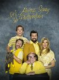
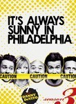
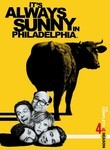
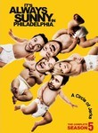
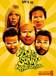

It's Always Sunny in Philadelphia
List contains: 161 items, 2.7 hours.
Seasons: 1 | 2 | 3 | 4 | 5 | 6 | 7 | 8 | 9 | 10 | 11 | 12 | 13 | 14 | 15 | 16 |
Seasons: 1 | 2 | 3 | 4 | 5 | 6 | 7 | 8 | 9 | 10 | 11 | 12 | 13 | 14 | 15 | 16 |
Stephen Klancher
...has seen 29
...has seen 0.5 hours
...has not seen 2.2 hours

Timeline
Most Recent:
Paddy’s Pub: The Worst Bar in Philadelphia
...has seen 29
...has seen 0.5 hours
...has not seen 2.2 hours
Timeline
Most Recent:
Paddy’s Pub: The Worst Bar in Philadelphia


Underage Drinking: A National Concern (2005) Airs on 2005-08-16
S1 - E3 of It's Always Sunny in Philadelphia
S1 - E3 of It's Always Sunny in Philadelphia
Stephen Klancher: June 1, 2009 
Charlie has cancer! http://www.yougotrickrolled.com/)
(changing this to plaintext after disallowing html comments seems a little silly)
(changing this to plaintext after disallowing html comments seems a little silly)
Stephen Klancher: June 2, 2009
"You must be really proud of your self... great... Your grandfather's a Nazi."
Stephen Klancher: June 10, 2009
Enter DeVito! This episode has stripper racing, wheelchair racing... what more could you want... also parts felt like a parody of Born on the Fourth of July.
Stephen Klancher: July 2, 2009
"I'm gonna get nice and drunk and play some video games til my eyes bleed."
"We need money to pay our hookers! We need money to buy crack!"
"You showed a lot of balls stealing my money. This shows leadership. I am promoting you to manager." "I did it too, what do I get?" "You get dick, because you are a follower and a thief!"
"We need money to pay our hookers! We need money to buy crack!"
"You showed a lot of balls stealing my money. This shows leadership. I am promoting you to manager." "I did it too, what do I get?" "You get dick, because you are a follower and a thief!"
Stephen Klancher: July 20, 2009
They looked pretty messed up and strung out when they were fighting at the end.
Stephen Klancher: August 2, 2009
"There's nothing more intimidating to man than a woman who is smart and attractive. We need to pretend you're both!"
"Denis Reynolds: Baby Rapist. Don't let him rape you!"
Funny episode.
"Denis Reynolds: Baby Rapist. Don't let him rape you!"
Funny episode.
Charlie Goes America All Over Everybody's Ass (2006) Airs on 2006-08-10
S2 - E9 of It's Always Sunny in Philadelphia
S2 - E9 of It's Always Sunny in Philadelphia

The Gang Finds A Dumpster Baby (2007) Airs on 2007-09-13
S3 - E1 of It's Always Sunny in Philadelphia
S3 - E1 of It's Always Sunny in Philadelphia
Stephen Klancher: October 14, 2009
Very funny episode. "You're going to remember this night for the rest of your lives!"
The Aluminum Monster vs. Fatty Magoo (2007) Airs on 2007-09-27
S3 - E5 of It's Always Sunny in Philadelphia
S3 - E5 of It's Always Sunny in Philadelphia
The Gang Solves the North Korea Situation (2007) Airs on 2007-09-27
S3 - E6 of It's Always Sunny in Philadelphia
S3 - E6 of It's Always Sunny in Philadelphia
Sweet Dee's Dating a Retarded Person (2007) Airs on 2007-10-11
S3 - E9 of It's Always Sunny in Philadelphia
S3 - E9 of It's Always Sunny in Philadelphia
Dennis Looks Like a Registered Sex Offender (2007) Airs on 2007-10-25
S3 - E11 of It's Always Sunny in Philadelphia
S3 - E11 of It's Always Sunny in Philadelphia
The Gang Gets Whacked: Part 1 (2007) Airs on 2007-11-01
S3 - E12 of It's Always Sunny in Philadelphia
S3 - E12 of It's Always Sunny in Philadelphia
The Gang Gets Whacked: Part 2 (2007) Airs on 2007-11-01
S3 - E13 of It's Always Sunny in Philadelphia
S3 - E13 of It's Always Sunny in Philadelphia
Bums: Making a Mess All Over the City (2007) Airs on 2007-11-15
S3 - E14 of It's Always Sunny in Philadelphia
S3 - E14 of It's Always Sunny in Philadelphia
The Gang Dances Their Asses Off (2007) Airs on 2007-11-15
S3 - E15 of It's Always Sunny in Philadelphia
S3 - E15 of It's Always Sunny in Philadelphia

The Gang Solves the Gas Crisis (2008) Airs on 2008-09-18
S4 - E2 of It's Always Sunny in Philadelphia
S4 - E2 of It's Always Sunny in Philadelphia
America’s Next Top Paddy’s Billboard Model Contest (2008) Airs on 2008-09-25
S4 - E3 of It's Always Sunny in Philadelphia
S4 - E3 of It's Always Sunny in Philadelphia
Paddy’s Pub: The Worst Bar in Philadelphia (2008) Airs on 2008-10-16
S4 - E8 of It's Always Sunny in Philadelphia
S4 - E8 of It's Always Sunny in Philadelphia
Dennis Reynolds: An Erotic Life (2008) Airs on 2008-10-23
S4 - E9 of It's Always Sunny in Philadelphia
S4 - E9 of It's Always Sunny in Philadelphia
The Gang Cracks the Liberty Bell (2008) Airs on 2008-11-06
S4 - E11 of It's Always Sunny in Philadelphia
S4 - E11 of It's Always Sunny in Philadelphia
The Gang Gets Extreme: Home Makeover Edition (2008) Airs on 2008-11-13
S4 - E12 of It's Always Sunny in Philadelphia
S4 - E12 of It's Always Sunny in Philadelphia

The Gang Exploits the Mortgage Crisis (2009) Airs on 2009-09-17
S5 - E1 of It's Always Sunny in Philadelphia
S5 - E1 of It's Always Sunny in Philadelphia
The Gang Gives Frank an Intervention (2009) Airs on 2009-10-08
S5 - E4 of It's Always Sunny in Philadelphia
S5 - E4 of It's Always Sunny in Philadelphia
The Waitress Is Getting Married (2009) Airs on 2009-10-15
S5 - E5 of It's Always Sunny in Philadelphia
S5 - E5 of It's Always Sunny in Philadelphia
The Gang Wrestles for the Troops (2009) Airs on 2009-10-29
S5 - E7 of It's Always Sunny in Philadelphia
S5 - E7 of It's Always Sunny in Philadelphia
Paddy's Pub: Home of the Original Kitten Mittens (2009) Airs on 2009-11-05
S5 - E8 of It's Always Sunny in Philadelphia
S5 - E8 of It's Always Sunny in Philadelphia
Mac and Charlie Write a Movie (2009) Airs on 2009-12-03
S5 - E11 of It's Always Sunny in Philadelphia
S5 - E11 of It's Always Sunny in Philadelphia
The Gang Reignites the Rivalry (2009) Airs on 2009-12-10
S5 - E12 of It's Always Sunny in Philadelphia
S5 - E12 of It's Always Sunny in Philadelphia

Mac's Mom Burns Her House Down (2010) Airs on 2010-10-21
S6 - E6 of It's Always Sunny in Philadelphia
S6 - E6 of It's Always Sunny in Philadelphia
Dee Reynolds: Shaping America's Youth (2010) Airs on 2010-11-11
S6 - E9 of It's Always Sunny in Philadelphia
S6 - E9 of It's Always Sunny in Philadelphia
Charlie Kelly: King of the Rats (2010) Airs on 2010-11-18
S6 - E10 of It's Always Sunny in Philadelphia
S6 - E10 of It's Always Sunny in Philadelphia
The Gang Gets Stranded in the Woods (2010) Airs on 2010-12-02
S6 - E11 of It's Always Sunny in Philadelphia
S6 - E11 of It's Always Sunny in Philadelphia
The Gang Goes to the Jersey Shore (2011) Airs on 2011-09-22
S7 - E2 of It's Always Sunny in Philadelphia
S7 - E2 of It's Always Sunny in Philadelphia
Frank Reynolds' Little Beauties (2011) Airs on 2011-09-29
S7 - E3 of It's Always Sunny in Philadelphia
S7 - E3 of It's Always Sunny in Philadelphia
Chardee MacDennis: The Game of Games (2011) Airs on 2011-10-27
S7 - E7 of It's Always Sunny in Philadelphia
S7 - E7 of It's Always Sunny in Philadelphia
The High School Reunion Part 2: The Gang's Revenge (2) (2011) Airs on 2011-12-15
S7 - E13 of It's Always Sunny in Philadelphia
S7 - E13 of It's Always Sunny in Philadelphia
The Maureen Ponderosa Wedding Massacre (2012) Airs on 2012-10-25
S8 - E3 of It's Always Sunny in Philadelphia
S8 - E3 of It's Always Sunny in Philadelphia
Reynolds vs. Reynolds: The Cereal Defense (2012) Airs on 2012-12-20
S8 - E10 of It's Always Sunny in Philadelphia
S8 - E10 of It's Always Sunny in Philadelphia
The Gang Tries Desperately to Win an Award (2013) Airs on 2013-09-18
S9 - E3 of It's Always Sunny in Philadelphia
S9 - E3 of It's Always Sunny in Philadelphia
Mac and Dennis Buy a Timeshare (2013) Airs on 2013-09-25
S9 - E4 of It's Always Sunny in Philadelphia
S9 - E4 of It's Always Sunny in Philadelphia
The Gang Makes Lethal Weapon 6 (2013) Airs on 2013-10-30
S9 - E9 of It's Always Sunny in Philadelphia
S9 - E9 of It's Always Sunny in Philadelphia
The Gang Squashes Their Beefs (2013) Airs on 2013-11-06
S9 - E10 of It's Always Sunny in Philadelphia
S9 - E10 of It's Always Sunny in Philadelphia
Ass Kickers United: Mac and Charlie Join a Cult Airs on 2015-03-18
S10 - E10 of It's Always Sunny in Philadelphia
S10 - E10 of It's Always Sunny in Philadelphia
Chardee MacDennis 2: Electric Boogaloo Airs on 2016-01-06
S11 - E1 of It's Always Sunny in Philadelphia
S11 - E1 of It's Always Sunny in Philadelphia
McPoyle vs. Ponderosa: The Trial of the Century Airs on 2016-02-17
S11 - E7 of It's Always Sunny in Philadelphia
S11 - E7 of It's Always Sunny in Philadelphia
Wolf Cola: A Public Relations Nightmare Airs on 2017-01-25
S12 - E4 of It's Always Sunny in Philadelphia
S12 - E4 of It's Always Sunny in Philadelphia
The Gang Solves The Bathroom Problem Airs on 2018-10-10
S13 - E6 of It's Always Sunny in Philadelphia
S13 - E6 of It's Always Sunny in Philadelphia
The Janitor Always Mops Twice (2019) Airs on 2019-10-30
S14 - E6 of It's Always Sunny in Philadelphia
S14 - E6 of It's Always Sunny in Philadelphia
The Gang Solves Global Warming (2019) Airs on 2019-11-06
S14 - E7 of It's Always Sunny in Philadelphia
S14 - E7 of It's Always Sunny in Philadelphia